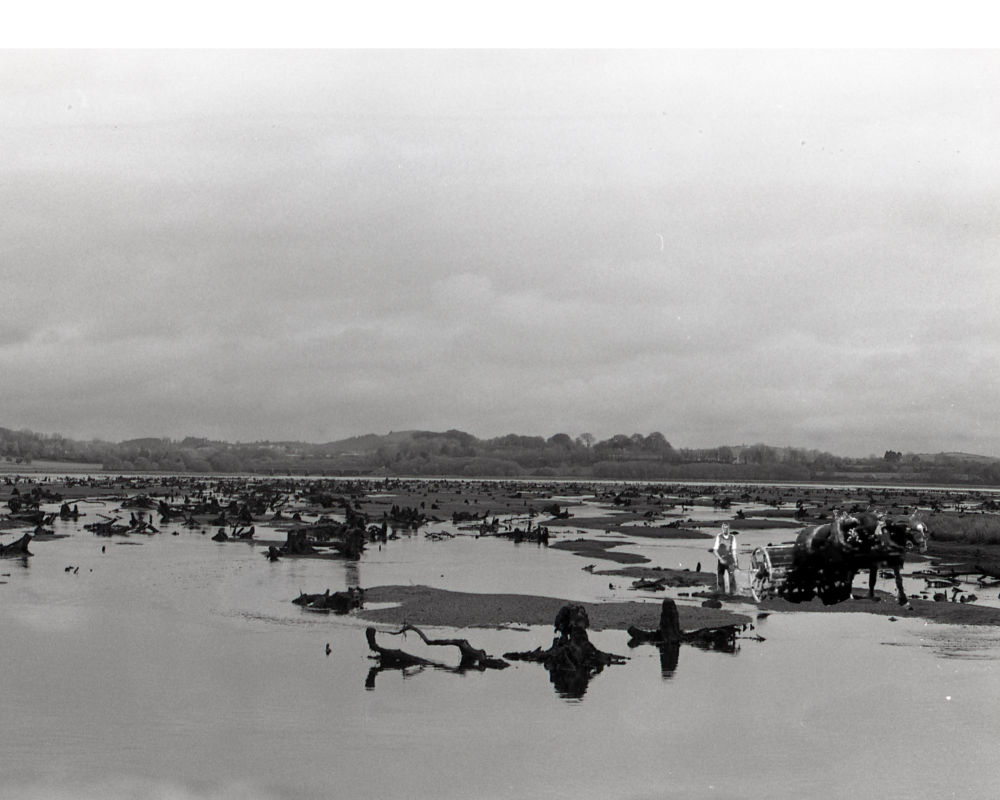
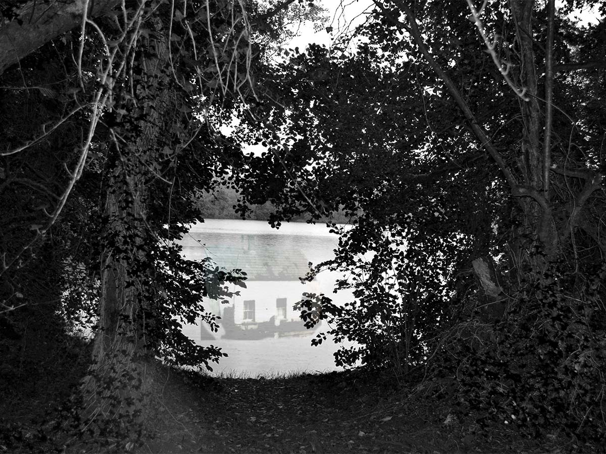
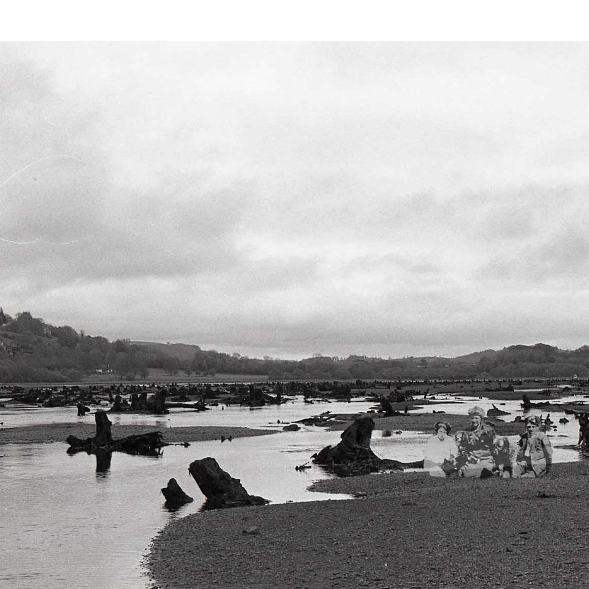
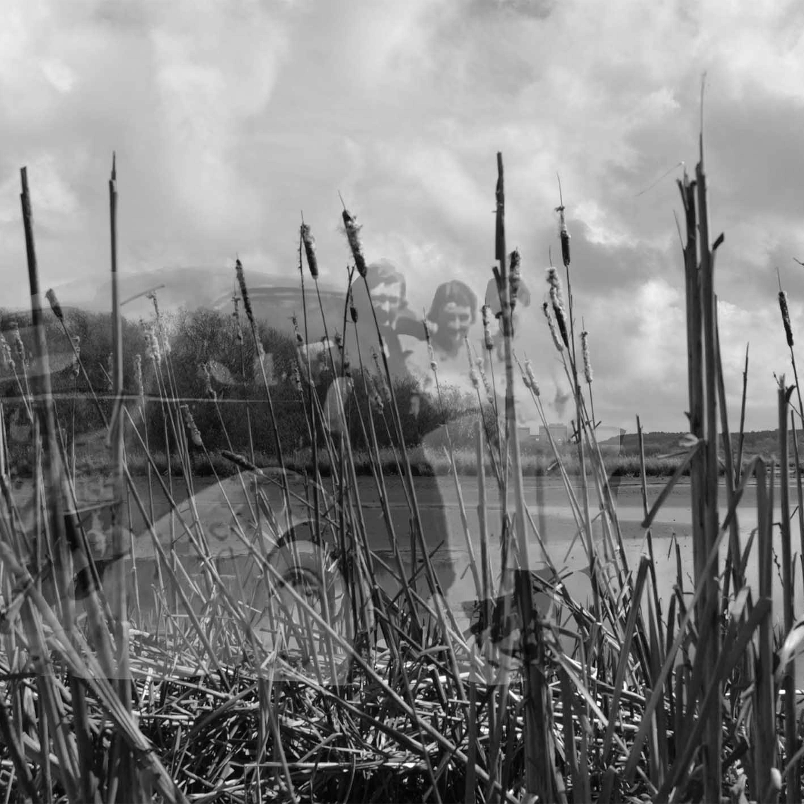
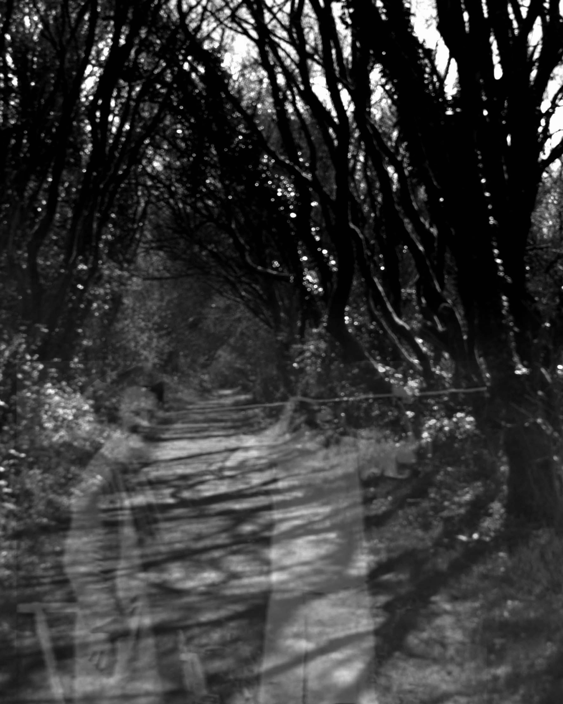
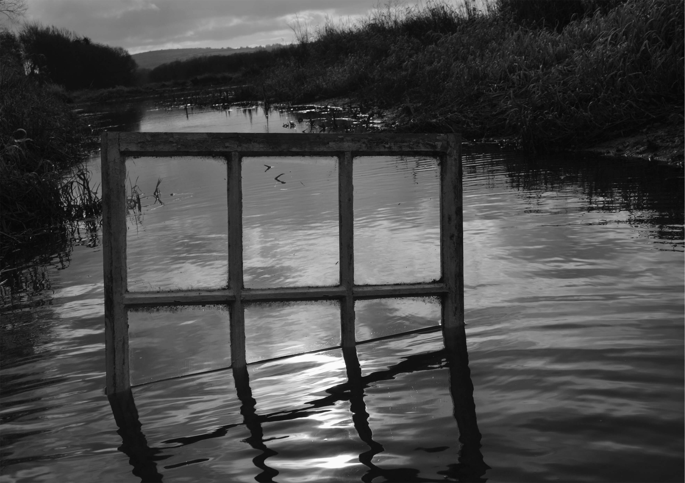
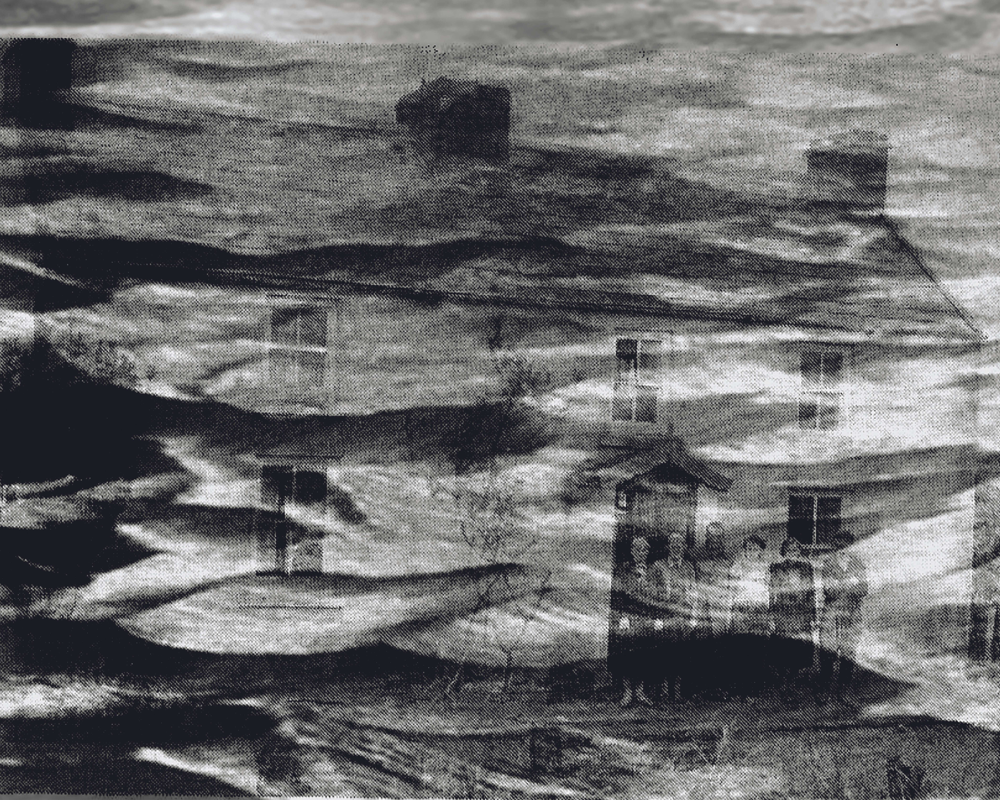

My name is Maria Healy and I am a local visual artist working in various mediums, in photography, glass, ceramics and textiles. Sometimes I combine mediums when required. In my current body of work, I am focusing on our beloved and beautiful Gearagh area. It exudes an atmosphere of the sublime and of absence present. It is a deeply layered terrain of remains, memories and histories, which take on another reality with the knowledge that this area hides a submerged village. Using my own photographs as a starting point and combining them with old photographs from a family who lived in the Anahala area during the 1930’s and 40’s, I digitally manipulate them to produce a juxtaposition or double exposure of then and now. Everyday life in all its vibrancy and essence was being lived out there. Children playing, family picnics, men ploughing fields, thrashing and harvesting, visitors posing for a photo, potatoe pickers pausing for a break and girls chatting by a car. Ordinary life in everyday living. But in October 1957, all this was to change forever. These precious images are some of the few remaining to show us the life that was. So now when you take a walk in the Gearagh, look with the deeper knowledge and reflect on what happened here because all around you are fleeting glimpses of the life which once thrived here. Hopefully it will not be consigned to the history archives but will live on in our imagination.
Ploughing Through Water
Cottage Reflection
Picnic in a Watery Field
Catchup in the Reeds
Playing in the Trees

Playing on the Port Road

Thrashing
View of a Submersion
Wave House